SATs – Semiconductor Analysis and Testing Solutions
We build Probe Stations
State-of-the-art approaches
Best & Extensible Solutions
High-quality Products
24*7 after-sales Support
About Us
Our company is driven by a team of active researchers who have been deeply engaged in state-of-the-art research in the semiconductor domain for over 8 years. We are dedicated to advancing technology and providing cutting-edge solutions for semiconductor analysis and testing.
Vision
Our vision is to promote the "Make in India" initiative by developing and manufacturing automatic precision scientific instruments for semiconductor testing in research and development. We aim to position India as a leader in semiconductor technology through our innovative solutions.
Mission
- Promote "Make In India"
- Promote "Green Energy Solutions"
- Promote "Research & Development through specialized instruments"
Our mission is to forecast the future of green energy, particularly solar energy, and support its advancement through our specialized instruments and services. We are committed to contributing to a sustainable future by providing the tools necessary for groundbreaking research and development in the semiconductor industry.
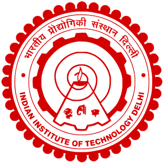
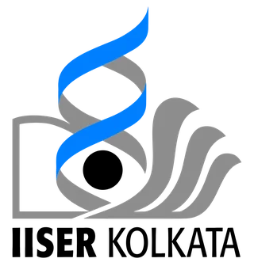
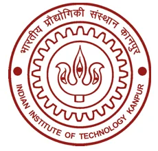
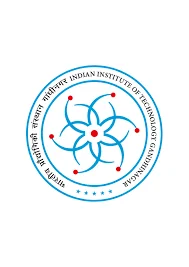
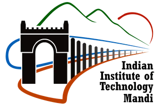
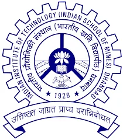
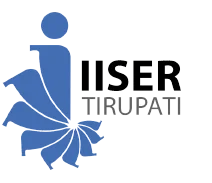
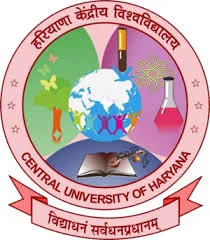
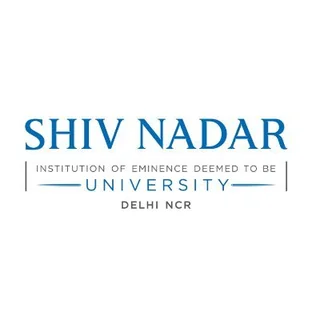
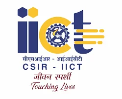
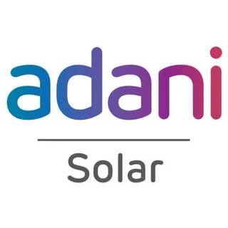
Happy Clients Delighting customers with our services.
Projects Handling and executing projects efficiently.
Hours Of Support Providing dedicated support whenever needed.
Call to book
Don't wait to elevate your research and development capabilities. Contact us today to learn more about our offerings and how we can tailor our solutions to meet your specific needs. Our dedicated team is ready to assist you with any questions and guide you through the booking process.
Call us nowOur Services
At SATs, we are committed to providing comprehensive and innovative solutions for semiconductor analysis and testing. Our range of services and products is designed to meet the diverse needs of researchers and developers in the semiconductor industry. Here’s what we offer:
Micro Probe Stations
Our high-precision micro probe stations are ideal for detailed semiconductor testing and analysis. These stations provide accuracy and reliability, essential for advanced research.
Read moreSample Holders
We offer a variety of sample holders that are designed to securely hold different types of semiconductor samples, ensuring stability and precision during testing procedures.
Read moreAutoclaves
Our autoclaves are equipped with advanced features to provide efficient and effective sterilization for your semiconductor equipment and samples.
Read morePEC Setups
We provide Photoelectrochemical (PEC) setups that are essential for studying the interactions between light and semiconductor materials, facilitating cutting-edge research in solar energy and other applications.
Read moreExternally Probe-Controlled Cryogenic Probe Station
High-precision platform enabling temperature-dependent electrical and material characterization from cryogenic to high-temperature environments without vacuum breaks. Ideal for semiconductor and MEMS device evaluation.
Read moreSATS Potentiostat
Compact potentiostat/galvanostat for accurate electrochemical measurements including CV, LSV, and corrosion analysis. Perfect for battery, supercapacitor, and sensor research.
Read moreMuffle Furnace
High-temperature furnace for material synthesis, heat treatment, and metallurgical studies with advanced PID temperature control and robust safety systems.
Read moreCryogenic Probe Station
Engineered for advanced semiconductor research, this station delivers high accuracy and stable performance for precise electrical characterization under a wide range of controlled temperatures.
Read moreVibration-less Table
Experience ultimate stability with a table designed to eliminate vibrations from your experiments, ensuring precision for optical, semiconductor, and material science research.
Read moreAI-ML in E2E Solution
Harness the power of Artificial Intelligence and Machine Learning with our predictive analysis services. We help you forecast trends and outcomes, enabling smarter decision-making in semiconductor research and development, also, end-to-end automation solutions streamline your research and testing processes, enhancing efficiency and accuracy. We tailor our automation systems to fit your specific needs, ensuring seamless integration and operation.
Read moreLab Instrument Supply
As a leading supplier of laboratory instruments, we offer a wide range of high-quality equipment necessary for semiconductor testing and analysis.
Read moreWebsite Development
We offer website development services tailored to your needs, specializing in creating responsive, user-friendly sites for various purposes such as personal blogs, e-commerce, and more. Partner with us to bring your digital vision to life.
Read moreIndustry Consultation
We offer industry consultation services tailored for sectors like the semiconductor and EdTech industries. Our expertise provides strategic guidance and innovative solutions to help businesses thrive. Partner with us to advance your industry goals.
EnquireSemiconductor Fabrication Services
We specialize in industry services for semiconductor manufacturing setup, offering strategic guidance and innovative solutions to optimize operations. Partner with us to enhance your semiconductor manufacturing capabilities.
EnquireTestimonials
Our commitment to excellence in semiconductor analysis and testing solutions has earned us the trust and satisfaction of numerous esteemed clients. Here’s what some of them have to say about their experience with SATs
Products
Explore our range of semiconductor testing instruments, lab equipment and research services.
- All
- Equipment
- Consultation
- Education
No product matches your search.


Pricing
Choose our semiconductor testing for top-notch precision and reliability at the lowest industry rates. 👌
Free Plan
₹0 / One time only*
- Free sample characterization
- Free Sample Analysis
- Free Consultation
- Hands-on training for sample testing and analysis
- High precision and accuracy solutions
Basic Plan
₹1,00,000/year
- Hands-on training for sample testing and analysis
- Basic support to fit your needs (< 24 hours)
- In-depth procedure on client requirement use-case
- Optimised performance, managing risk, and keeping costs under control
- Programmatic solutions
Business Plan
₹3,00,000/year
- High precision and accuracy solutions
- In-depth procedure on client requirement use-case
- Programmatic solutions
- Architectural Guidance for R&D
- Enhanced support to fit your needs – prioritized responses
Frequently Asked Questions
Here, we address some of the most common questions our clients have about our products, services, and company. Whether you are a new customer looking to learn more about what we offer or a long-time partner seeking additional information, you'll find valuable insights below. If you don't see the answer to your question, please don't hesitate to contact us directly.
Follow SATs on LinkedIn
Updates from the SATs team, straight from our LinkedIn page.
Semiconductor Analysis and Testing Solutions (SATs)
Follow our page for the latest from our team of researchers and engineers.
Follow on LinkedInCrafted with in Gandhinagar, India
SATs – Instruments made by researchers, for researchers.
Contact
All the challenges are our hobby, and we're always thrilled to serve our community.
Location:
IIC, PDPU Hostel Road, Raysan
Gandhinagar 382007,
Gujarat (GJ),
India.
Open in Google Maps
Email:
Call:
Open Hours:
Mon–Sat: 10 AM – 6 PM